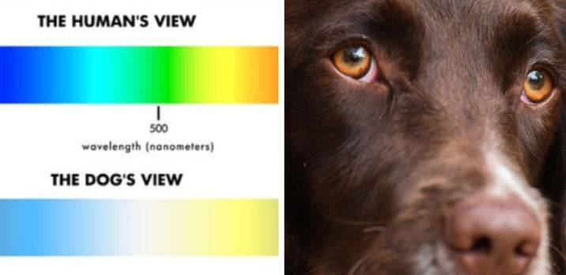

Do dogs see in color? The truth.
Yes, dogs can see color. The color we all see is determined by all the individual nerve cells in our eyes. The retina in each of us eyes are equipped with cones, which differentiate colors, and two cell-rods, that detect motion and different levels of light.
We as humans have three different cones in our eyes that are perfect for detecting different combinations of blue, green, and red. Dogs on the other hand only possess two cones and can only process yellow and blue. This is a condition known scientifically as dichromatic vision. Humans are equipped with more cones, but dogs get the upper-hand with more rods which enables them to see better than us in low light.
Dog's color vision
A dog's color vision is very similar to humans other than being green-red color blind. There are other differences too. Humans are very sensitive to different changes in brightness and different variations of grey while dogs are the opposite.
Some dogs, such as poodles, have somewhat of a 20/75 vision which means they are nearsighted to varying degrees. They have roughly 20/75 vision in the US which would translate to around 6/24 other places around the world.
Dogs will always come out on top whenever it comes down to picking up motion at a distance. A dog's vision is roughly 10 to 20 times more sensitive when compared to humans. This sensitivity is why hunters use dogs to help hunt during the hours of dusk and dawn.
Dogs only see black and white (Myth)
There has been this myth going around before many of us were even born that dogs can only see black and white. You will always hear people say things like this when it comes to dealing with dog's vision. This however is all false, Dog's have a much wider color pallet than only black and white. Dogs are able to see yellow, blue, and just about any combination of those two colors. Dogs are also able to see shades of grey.

What colors do dogs see?
The definite answer to what colors dogs see are dark yellow, grayish brown, light yellow, light blue, grayish yellow, and dark blue. They also have the ability to see ultraviolet (This means beyond violet). Humans on the other hand cannot see ultraviolet.
Think about it, most toys made today for pets are being made in colors such as red which dogs will only see as some sort of grey. Try getting your dog toys in colors such as yellow, blue or light green.
Can Dogs See In The Dark? (Myth or not?)
Here is a research done by The Royal Society B team which concluded that out of 8 dogs tested, majority showed that they were more likely to recognize the color of a paper rather than the brightness of said paper. This research should be proof enough to debunk the myth of dogs can only see in black and white. The article goes over all the materials and methods used to complete the research. There is also a section that goes over the results and then a discussion section.
Why Do Dogs Have a Wider Peripheral Vision?
Dogs have a wider peripheral vision because of the orientation of their faces. Their eyes are located on either side of their heads which allows them to have a view of 250 degrees. Humans on the other hand are only able to see 190 degrees. Thats a whopping 60 degrees more. Each dog will have a different range of view as in they all have different shaped heads and some even have hair that cuts their field of vision down by a couple degrees.
What Is Color Blindness?

Color blindness is defined as the inability to distinguish the difference between certain colors or to even see colors at all. The problem arises in the eyes when there is an abnormality in the receptors of the eye that is responsible for sensing color.
There are two different types of color blindness in humans: blue-yellow and green-red color blindness. If someone has blue-yellow color blindness then that person cannot differential between those two colors.
FAQ Section
Question 1: Do dogs see color?
Yes, dogs are able to see color. They are limited in the amount of color they can see, but they are able to see different colors.
Question 2: What does a dog's vision look like?
A dogs' vision is comprised of mainly yellow-bluish receptors. Say for instance we show a dog a picture of a rose with trees in the background, that dog will see that picture as mainly yellow and light green.
Question 3: What color do dogs see best?
It is impossible to tell 100 percent which colors dogs see best but studies have shown that dogs see blue and yellow best.
Question 4: Can dogs see in the dark?
I wouldn't go as far as to say that dogs can see in the dark. However, they are way more able to navigate in low light areas than humans.
The simplest answer to whether or not dogs see color is "yes". They see many different types of colors along with shades of grey.